| Name | Image | Rarity | Type | Cost | Description |
|---|
| Run Through | 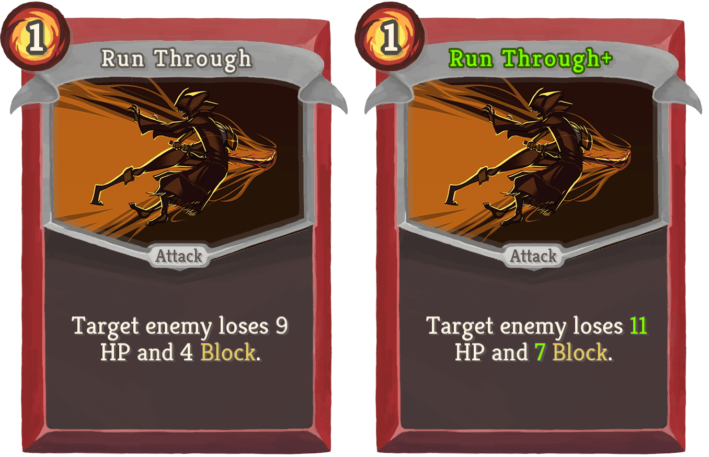 | Common | Attack | 1 | Target enemy loses 9 (11) HP and 4 (7) Block. |
| Strike From Hell | 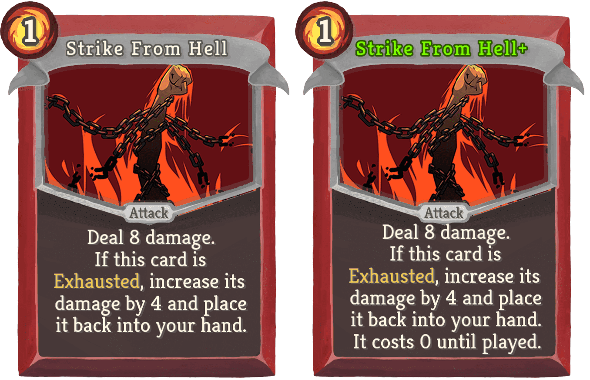 | Common | Attack | 1 | Deal 8 damage. If this card is Exhausted, increase its damage by 4 and place it back into your hand. (It costs 0 until played.) |
| Undeath's Touch | 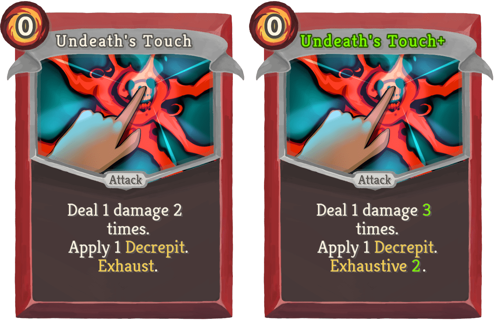 | Common | Attack | 0 | Deal 1 damage 2 (3) times. Apply 1 Decrepit. Exhaust (Exhaustive !stslib:ex!). |
| Abandon |  | Uncommon | Skill | 0 | Exhaust up to 3 cards. Draw 1 card for each. Add a Void (Dazed) to your discard pile. Exhaustive 3 (4). Ethereal. |
| Corrosion Curse |  | Uncommon | Skill | 1 | Apply 1 (2) Languid and 2 (3) Decrepit. Exhaustive 2. |
| Defy Death |  | Uncommon | Skill | 5 | Gain 10 (14) Block. Costs [R] less for each card you've Exhausted this combat. Grave. |
| Leading Strike |  | Uncommon | Attack | 1 | Deal 4 damage. Reduce the cost of an Attack in your hand to 1 (0) this turn. |
| Life Bind | 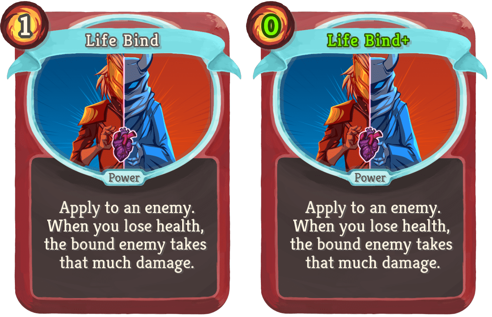 | Uncommon | Power | 1 (0) | Apply to an enemy. When you lose health, the bound enemy takes that much damage. |
| Limb From Limb |  | Uncommon | Attack | 3 | Deal 24 (28) damage. If this deals at least 30 (32) unblocked damage, Refund 2 and draw 2 cards. |
| Massacre |  | Uncommon | Attack | 1 | Deal 1 (3) damage to ALL enemies. Lose all Strength. Affected 5 (8) times by Strength. |
| Phantom Shield | 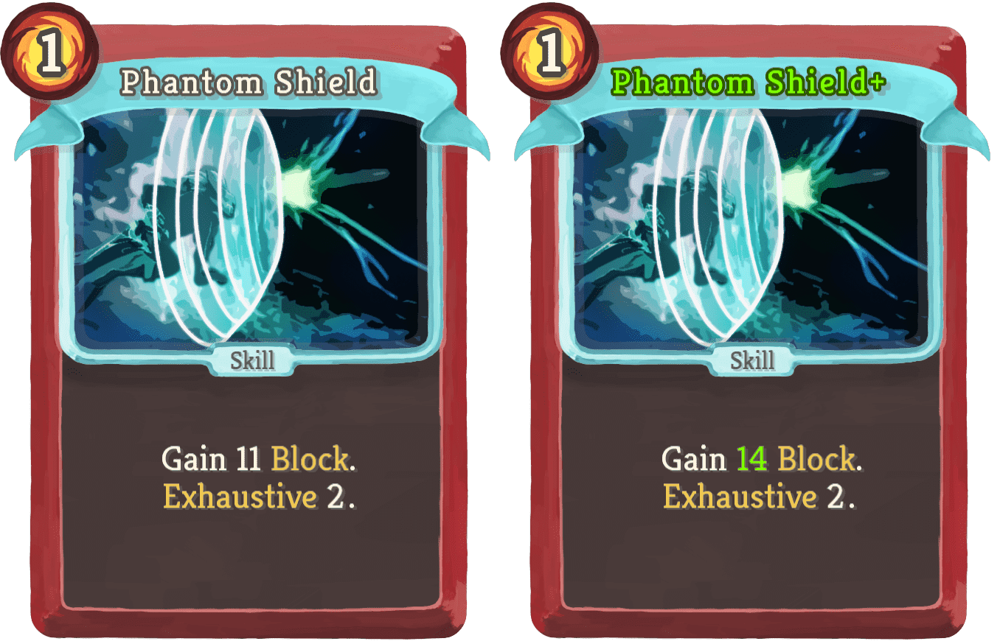 | Uncommon | Skill | 1 | Gain 11 (14) Block. Exhaustive 2. |
| Reversal |  | Uncommon | Skill | 1 | Keep Block at the end of this (the next !replay:M-1!) round(s). Gain 2 (3) Reflection. |
| Weight Training | 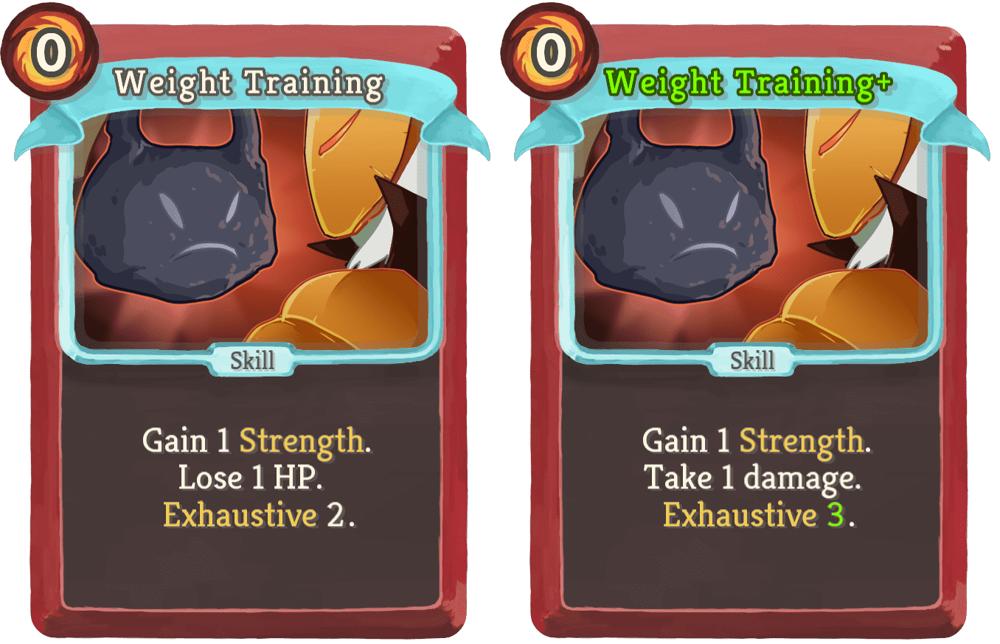 | Uncommon | Skill | 0 | Gain 1 Strength. Lose (Take) 1 HP (damage). Exhaustive 2 (3). |
| Demonic Infusion | 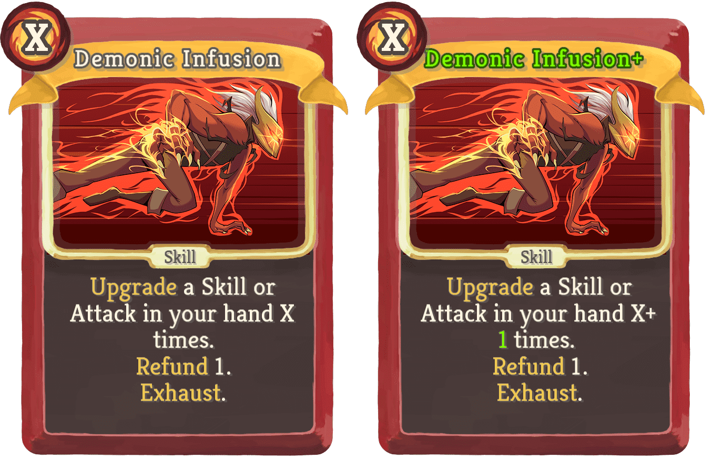 | Rare | Skill | X | Upgrade a Skill or Attack in your hand X (X+ !M!) times. Refund 1. Exhaust. |
| Eclipse |  | Rare | Skill | 3 | Exhaust your hand, and replace it with random cards that cost 1 less than normal. (Refund !stslib:refund!.)Exhaust. |
| Hemogenesis | 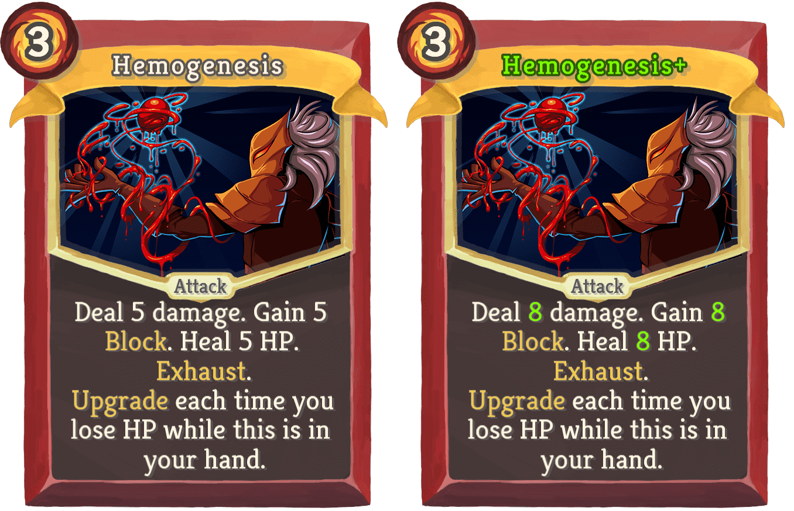 | Rare | Attack | 3 | Deal 5 (8) damage. Gain 5 (8) Block. Heal 5 (8) HP. Exhaust. Upgrade each time you lose HP while this is in your hand. |
| Many Hands | 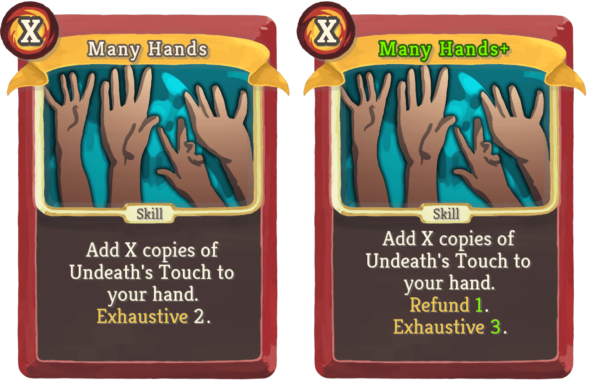 | Rare | Skill | X | Add X copies of Undeath's Touch to your hand. (Refund !stslib:refund!.)Exhaustive 2 (3). |
| Hidden Blade |  | Common | Skill | 1 | Add a Shiv to your hand and draw 2 (3) cards. |
| Draining Mist |  | Uncommon | Skill | 3 | Apply 3 Necrotic Poison and 1 Languid to a random enemy 2 (3) times. Apply -1 (-2) Strength to ALL enemies. Exhaust. |
| Exploit Weakness |  | Uncommon | Skill | 1 (0) | Apply Languid equal to target's Weak. Exhaust. |
| Fluid Movement |  | Uncommon | Power | 1 | Keep up to 5 (8) Block between rounds. |
| Poison Smokescreen | 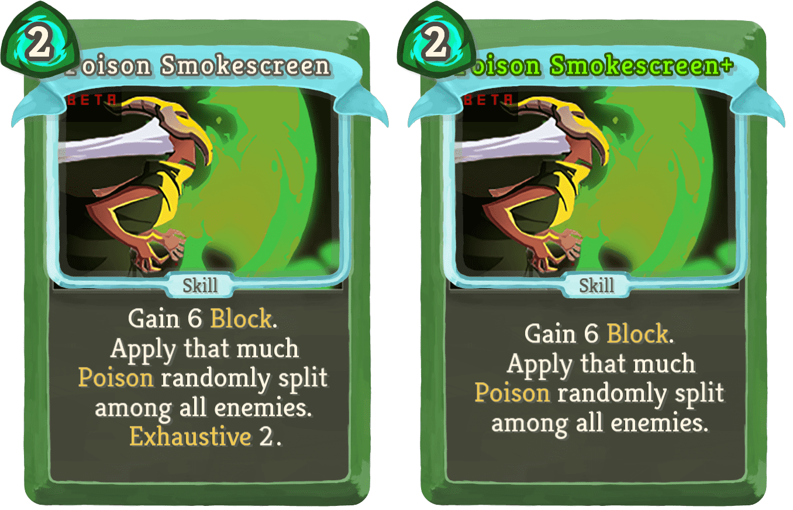 | Uncommon | Skill | 2 | Gain 6 Block. Apply that much Poison randomly split among all enemies. Exhaustive 2. (not Exhaustive 2.) |
| Scrap Shanks | 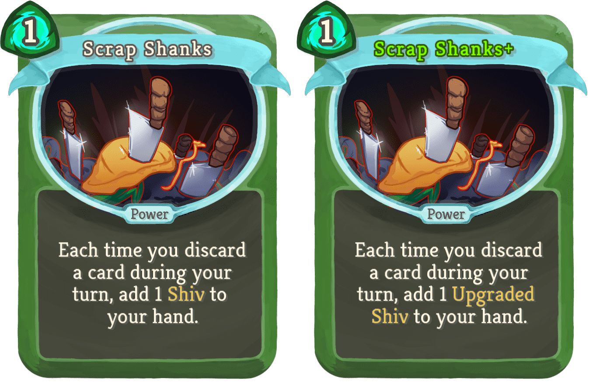 | Uncommon | Power | 1 | Each time you discard a card during your turn, add 1 (Upgraded) Shiv to your hand. |
| Shiv Toss |  | Uncommon | Skill | 0 | Discard all Shivs in your hand. Your Shivs deal 1 extra damage this combat for each one discarded. Exhaustive 2.(Retain.) |
| Sneak Up |  | Uncommon | Skill | 3 (2) | Gain 1 Intangible. Discard all Attacks in your hand. Refund 2 (1). Innate. Exhaust. Ethereal. |
| Speed Training | 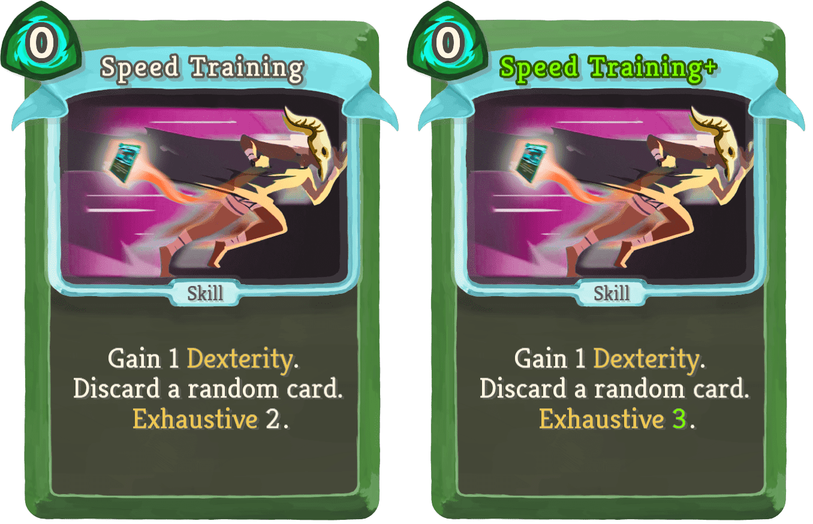 | Uncommon | Skill | 0 | Gain 1 Dexterity. Discard a random card. Exhaustive 2 (3). |
| The Works | 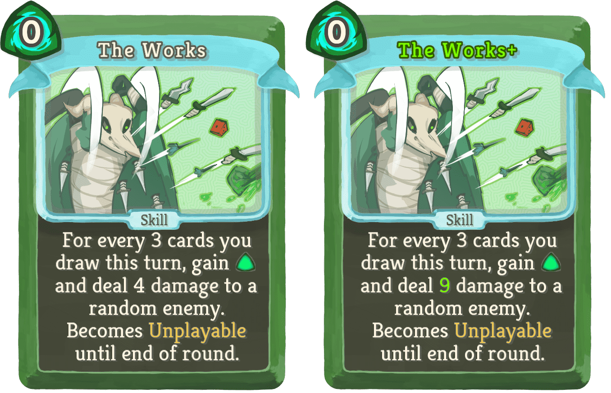 | Uncommon | Skill | 0 | For every 3 cards you draw this turn, gain [E] and deal 4 (9) damage to a random enemy. Becomes Unplayable until end of round. |
| Toxin Wave |  | Uncommon | Skill | 1 | Apply 3 (4) Necrotic Poison to ALL enemies. |
| Tripwire | 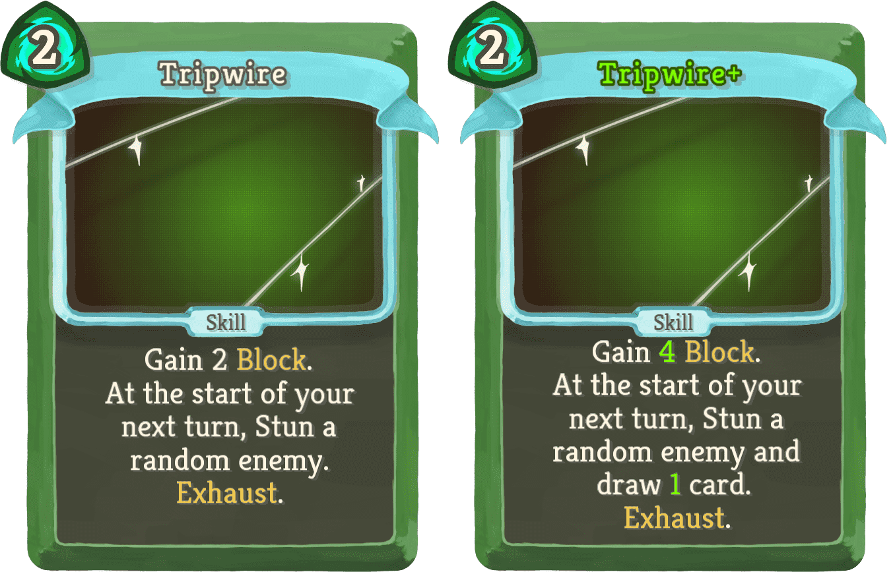 | Uncommon | Skill | 2 | Gain 2 (4) Block. At the start of your next turn, Stun a random enemy (and draw !M! card). Exhaust. |
| Atom Bomb | 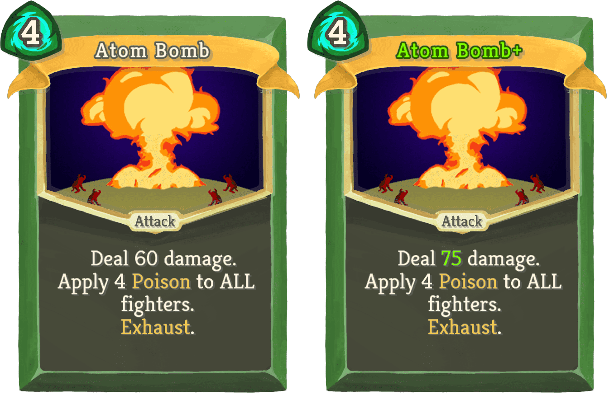 | Rare | Attack | 4 | Deal 60 (75) damage. Apply 4 Poison to ALL fighters. Exhaust. |
| Bag of Tricks | 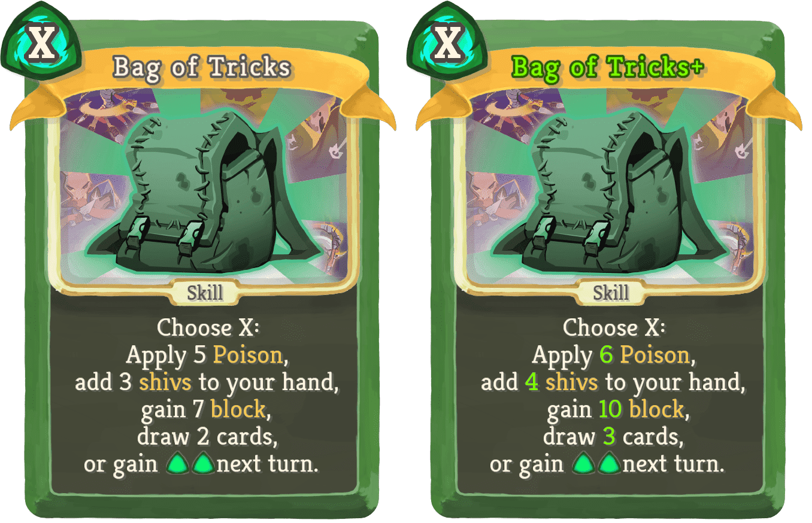 | Rare | Skill | X | Choose X: Apply 5 (6) Poison, add 3 (4) shivs to your hand, gain 7 (10) block, draw 2 (3) cards, or gain [E] [E] next turn. |
| From All Sides |  | Rare | Attack | X | Apply 1 Weak and deal 3 (4) damage to a random enemy 2X + 1 times. |
| Necrosis | 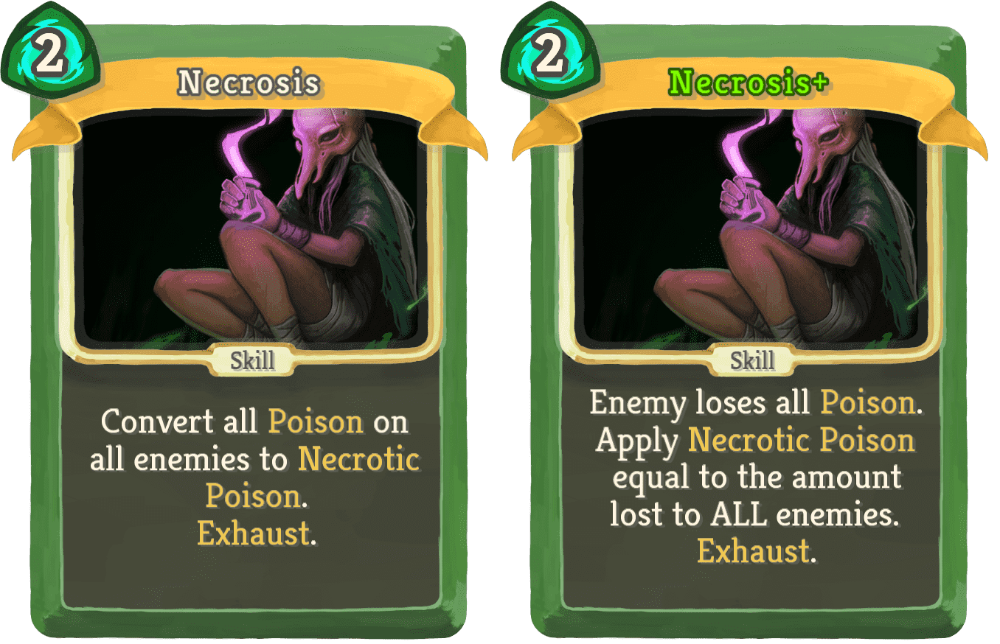 | Rare | Skill | 2 | Convert (Enemy loses) all Poison on all enemies to (. Apply) Necrotic Poison (equal to the amount lost to ALL enemies). Exhaust. |
| Poison Darts |  | Rare | Skill | X | Apply 3 (4) Necrotic Poison X times. Apply X Poison to ALL enemies. |
| Crystal Conduit |  | Common | Skill | 1 | Channel 1 Crystal.(Channel 1 random orb.) |
| Panic Button | 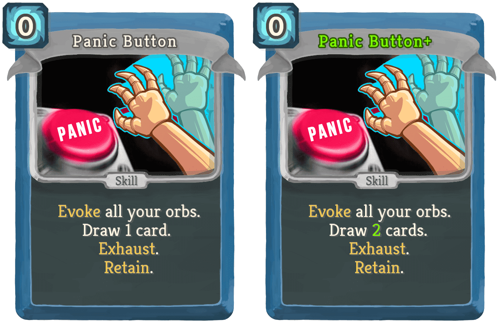 | Common | Skill | 0 | Evoke all your orbs. Draw 1 (2) card(s). Exhaust. Retain. |
| Calculation Training |  | Uncommon | Skill | 0 | Gain 1 Focus. Add (Exhaustive 2 (3). Startup: add) 1 Dazed to your discard pile. Exhaustive 2 (3). (not Exhaustive 2 (3).) |
| Claw Rake | 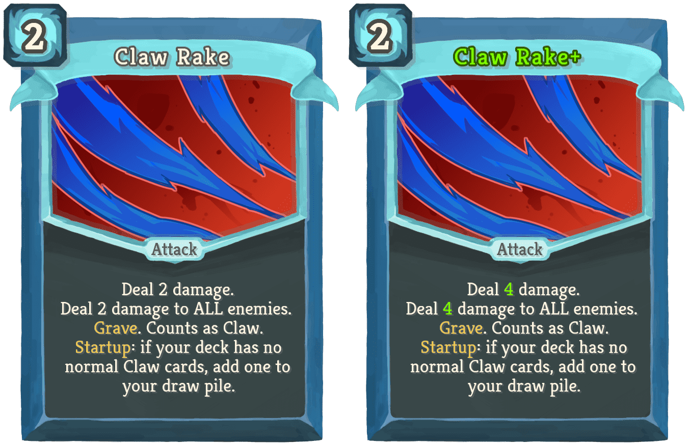 | Uncommon | Attack | 2 | Deal 2 (4) damage. Deal 2 (4) damage to ALL enemies. Grave. Counts as Claw. Startup: if your deck has no normal Claw cards, add one to your draw pile. |
| Crystallizer | 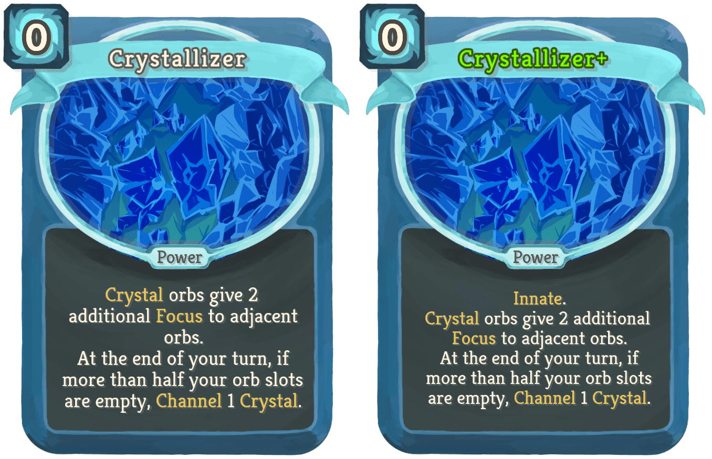 | Uncommon | Power | 0 | (Innate.)Crystal orbs give 2 additional Focus to adjacent orbs. At the end of your turn, if more than half your orb slots are empty, Channel 1 Crystal. |
| Empty Bin |  | Uncommon | Power | 1 | (Innate.)At the end of your turn, Exhaust all Common cards in your hand, and gain 4 (5) Block for each. |
| FIFO Queue | 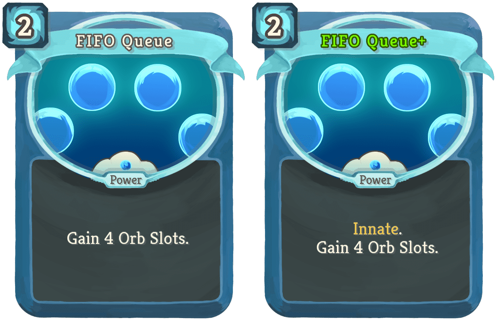 | Uncommon | Power | 2 | (Innate.)Gain 4 Orb Slots. |
| Repulse |  | Uncommon | Skill | 0 | Gain 1 (2) Reflection. Shuffle 1 Backfire into your discard pile. |
| Reroute Power | 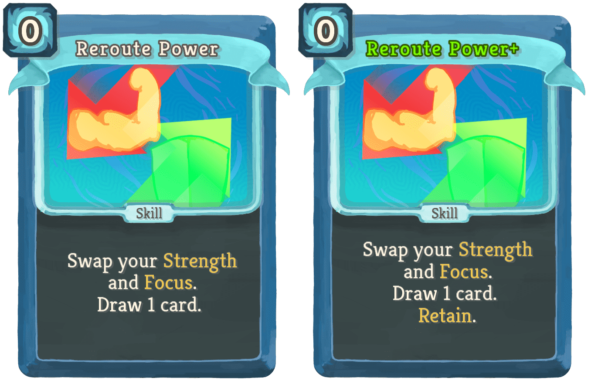 | Uncommon | Skill | 0 | Swap your Strength and Focus. Draw 1 card.(Retain.) |
| Solid Light Projector |  | Uncommon | Skill | 1 | Gain 2 Shielding for every 5 (3) cards in your discard pile. Exhaustive 2. |
| Sort |  | Uncommon | Skill | 1 | Shuffle all Rare OR non-Status cards in your discard pile back into your draw pile. Draw 2 cards.(Retain.) |
| System Scan | 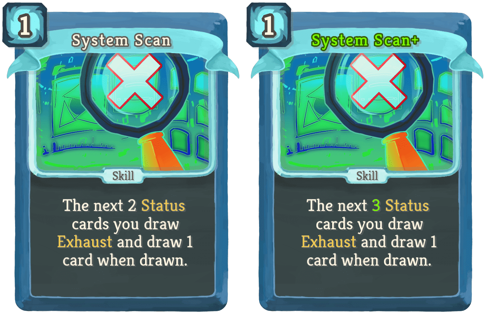 | Uncommon | Skill | 1 | The next 2 (3) Status cards you draw Exhaust and draw 1 card when drawn. |
| Time Bomb |  | Uncommon | Skill | 1 | Gain 2 Orb Slots. Channel 2 Glass. Channel 1 Dark and trigger its passive 2 (3) times. Exhaust. |
| Mirror Shield |  | Rare | Skill | 2 | Channel 1 Crystal. Channel 1 Frost. Gain 5 (8) Block. Gain 1 (2) Reflection. |
| Omega Cannon |  | Rare | Attack | 2 | Deal 7 (6) damage to ALL enemies 4 (5) times. Add 2 Backfires to your discard pile. |
| RNG |  | Rare | Skill | X | Channel X ((X+1)) random orbs. |
| At The Ready |  | Common | Skill | 1 (0) | Retain. Enter Guard. Exhaust. |
| Blunt Jabs | 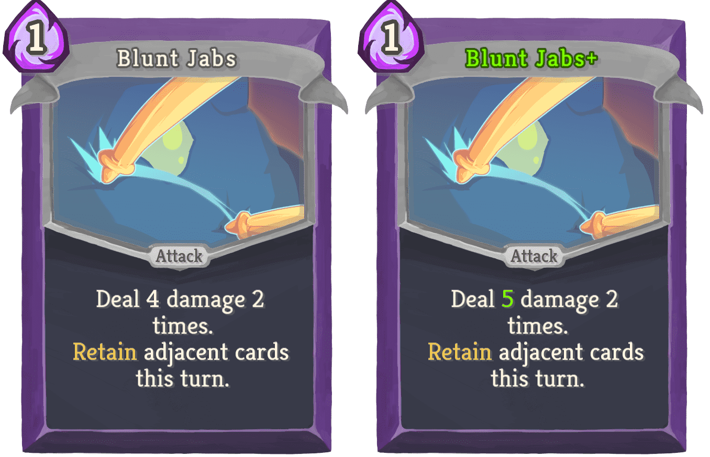 | Common | Attack | 1 | Deal 4 (5) damage 2 times. Retain adjacent cards this turn. |
| Manipulate Future | 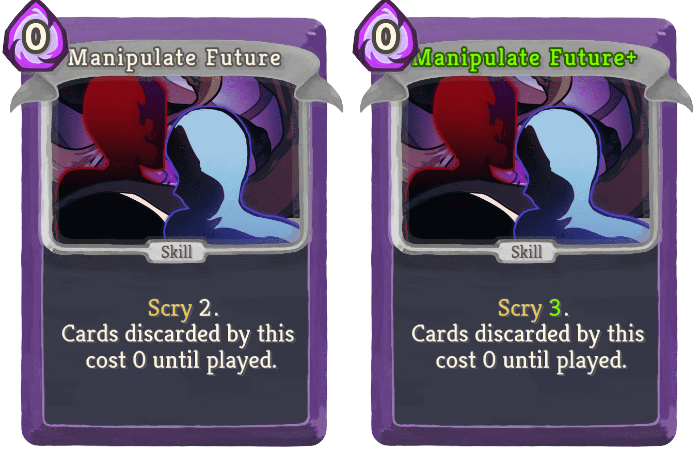 | Common | Skill | 0 | Scry 2 (3). Cards discarded by this cost 0 until played. |
| Anticipation | 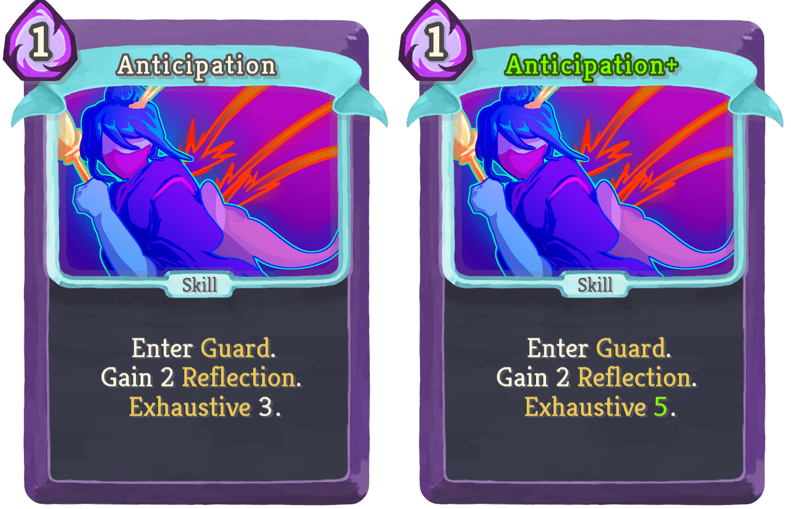 | Uncommon | Skill | 1 | Enter Guard. Gain 2 Reflection. Exhaustive 3 (5). |
| Battleflow | 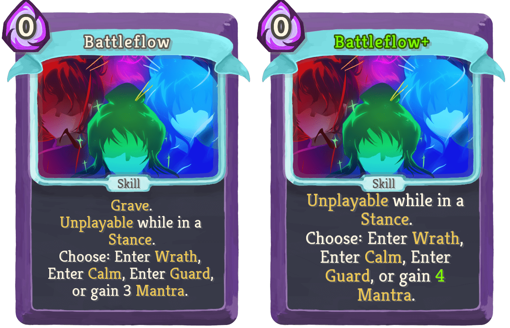 | Uncommon | Skill | 0 | Grave. (not Grave.) Unplayable while in a Stance. Choose: Enter Wrath, Enter Calm, Enter Guard, or gain 3 (4) Mantra. |
| Cycle | 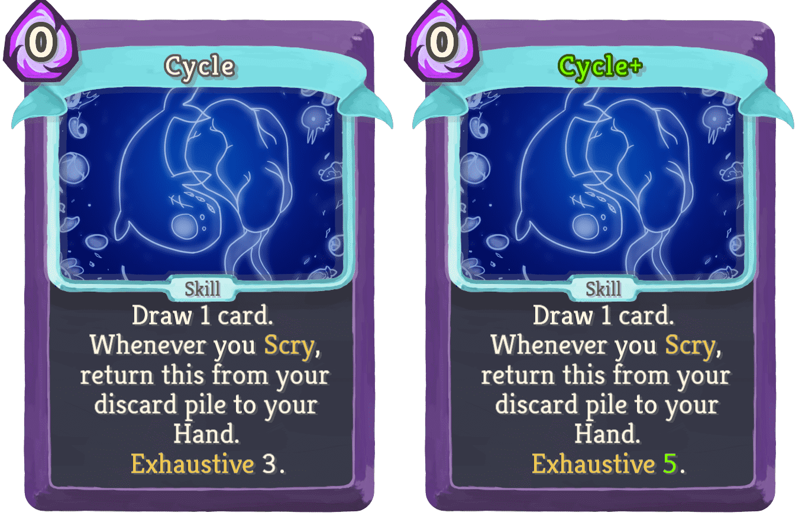 | Uncommon | Skill | 0 | Draw 1 card. Whenever you Scry, return this from your discard pile to your Hand. Exhaustive 3 (5). |
| Divine Shield | 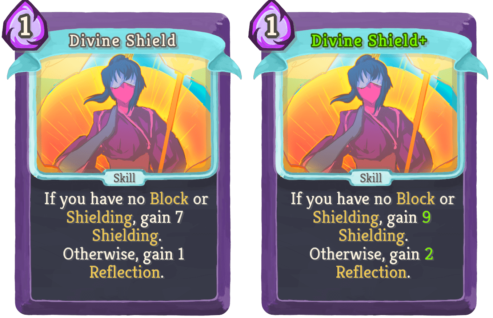 | Uncommon | Skill | 1 | If you have no Block or Shielding, gain 7 (9) Shielding. Otherwise, gain 1 (2) Reflection. |
| Hum | 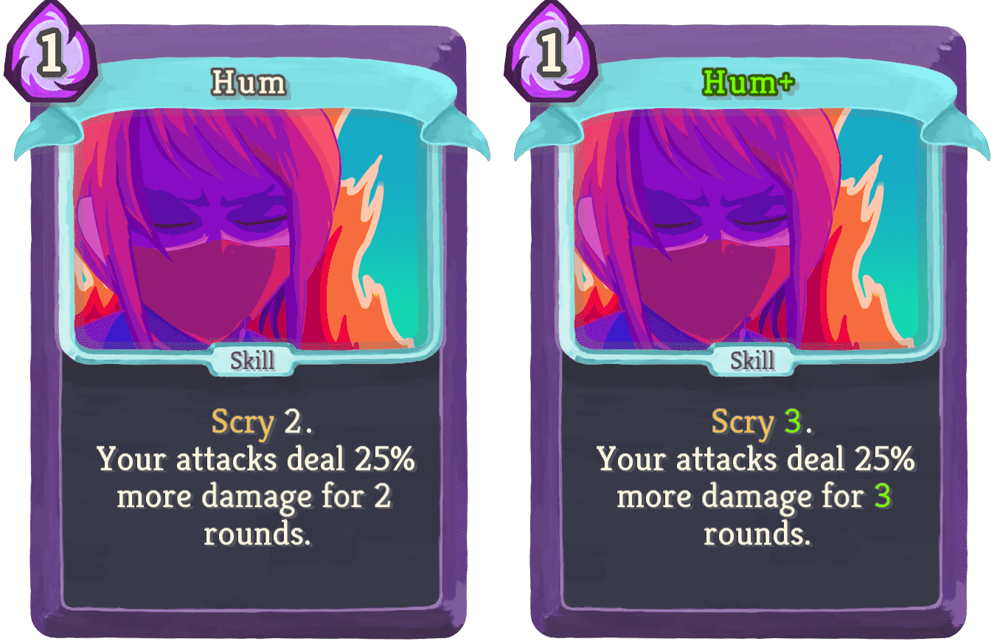 | Uncommon | Skill | 1 | Scry 2 (3). Your attacks deal 25% more damage for 2 (3) rounds. |
| Vibes | 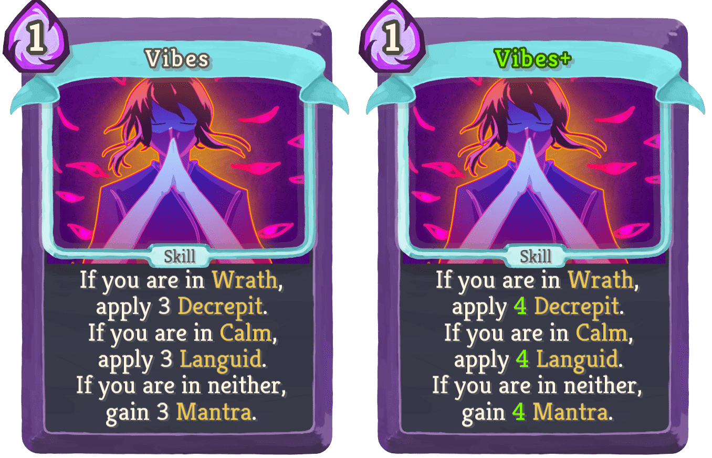 | Uncommon | Skill | 1 | If you are in Wrath, apply 3 (4) Decrepit. If you are in Calm, apply 3 (4) Languid. If you are in neither, gain 3 (4) Mantra. |
| All In |  | Rare | Skill | 1 | Enter Wrath. Add an All Out to your hand. Exhaust. (not Exhaust.) |
| Looming Threat | 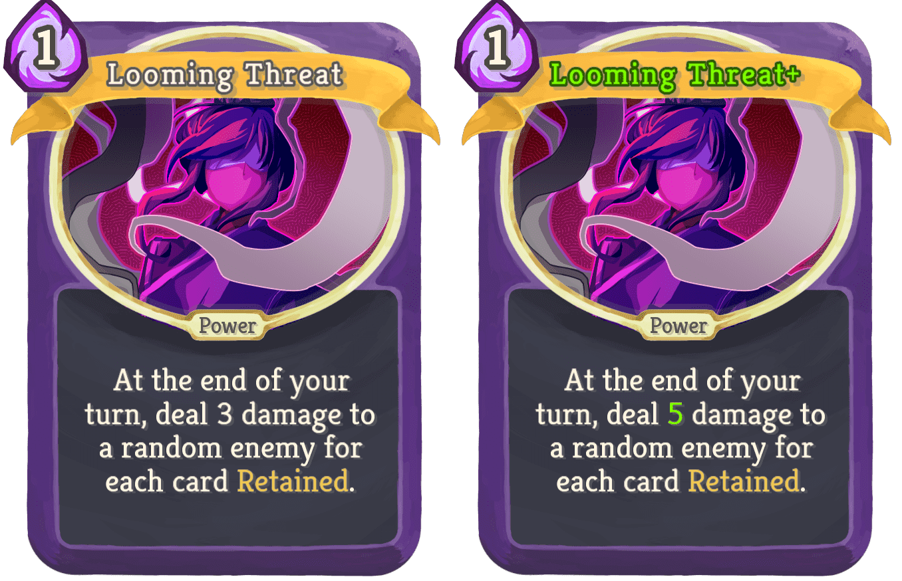 | Rare | Power | 1 | At the end of your turn, deal 3 (5) damage to a random enemy for each card Retained. |
| Survivalism | 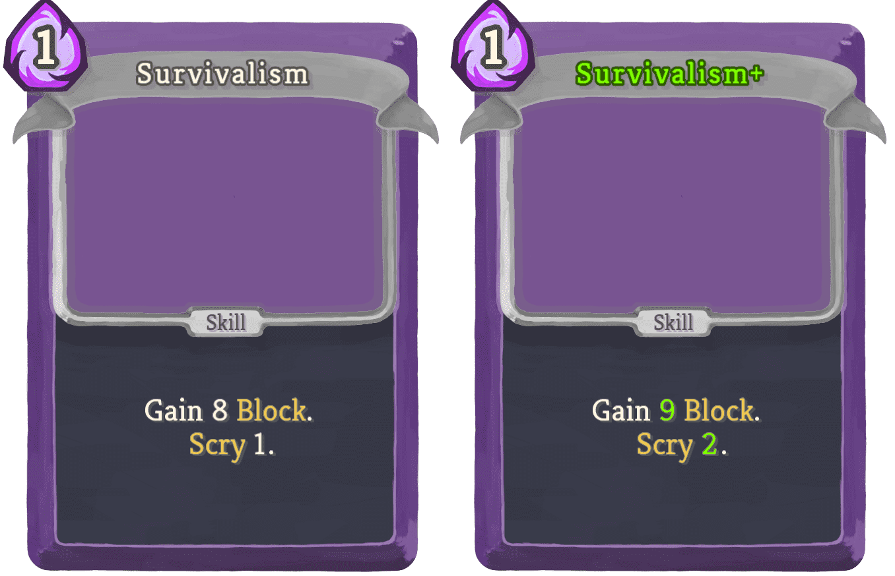 | Basic | Skill | 1 | Gain 8 (9) Block. Scry 1 (2). |
| All Out | 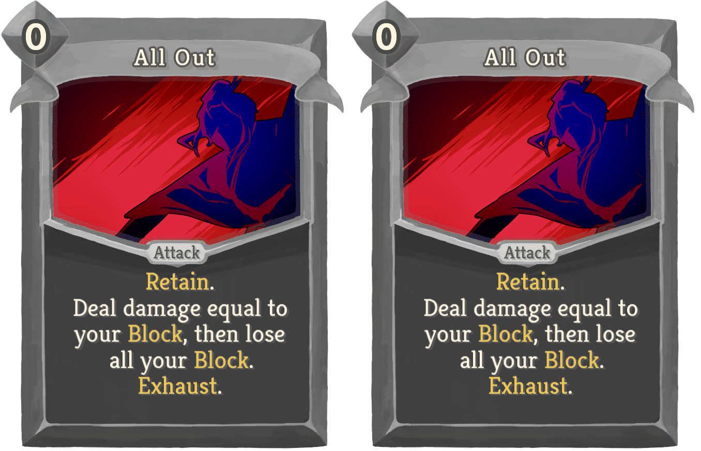 | Special | Attack | 0 | Retain. Deal damage equal to your Block, then lose all your Block. Exhaust. |
| Dark Echo |  | Special | Attack | 1 | Deal 42 (56) damage to ALL enemies. |
| Firewall |  | Special | Skill | 2 | Gain 10 (14) Block. Each time you block incoming damage this round, Channel 1 Hellfire. |
| Ghost Defend | 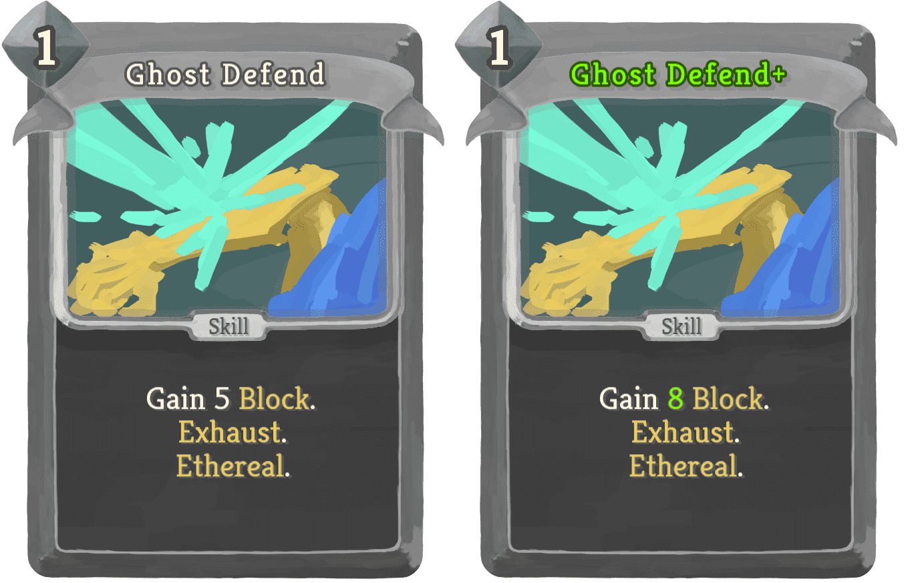 | Special | Skill | 1 | Gain 5 (8) Block. Exhaust. Ethereal. |
| Ghost Fetch |  | Special | Skill | 0 | Choose a basic card from your draw pile and place it into your hand. (It costs 0 this turn.)Exhaust. Ethereal. |
| Ghost Swipe |  | Special | Attack | 1 | Deal 6 (9) damage. Exhaust. Ethereal. |
| Grinning Jar | 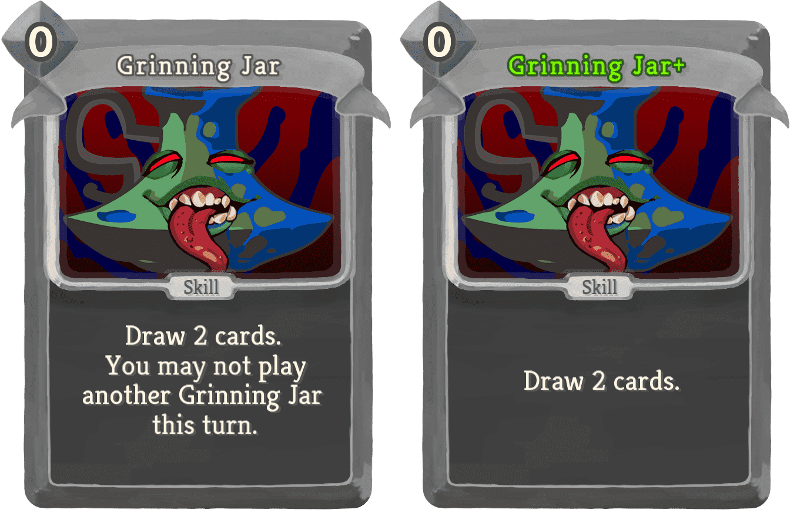 | Special | Skill | 0 | Draw 2 cards. You may not play another Grinning Jar this turn. (not You may not play another Grinning Jar this turn.) |
| Overheat Weapons |  | Special | Skill | 0 | Gain 1 Focus if you have <0, Lose 1 Focus if you have >0. Channel 1 Hellfire. Add 1 Backfire to your discard pile. (not Add 1 Backfire to your discard pile.) Ethereal. |
| Ritual Component |  | Special | Skill | 0 | Draw 1 card. |
| Scorching Beam |  | Special | Attack | 2 | Deal 8 (9) damage to ALL enemies. Channel 1 (2) Hellfire. |
| Might |  | Uncommon | Power | X | For X turns, your Attacks deal 25% more damage. Refund 2 (3). |
| Parry |  | Uncommon | Attack | 1 | Deal 4 (5) damage. Gain 2 Reflection if target intends to attack. Ethereal. (not Ethereal.) Exhaustive 3. |
| Private Reserves |  | Uncommon | Skill | 0 | Gain [E]. (Draw 1 card.)Exhaust. Retain. |
| Shield Generator | 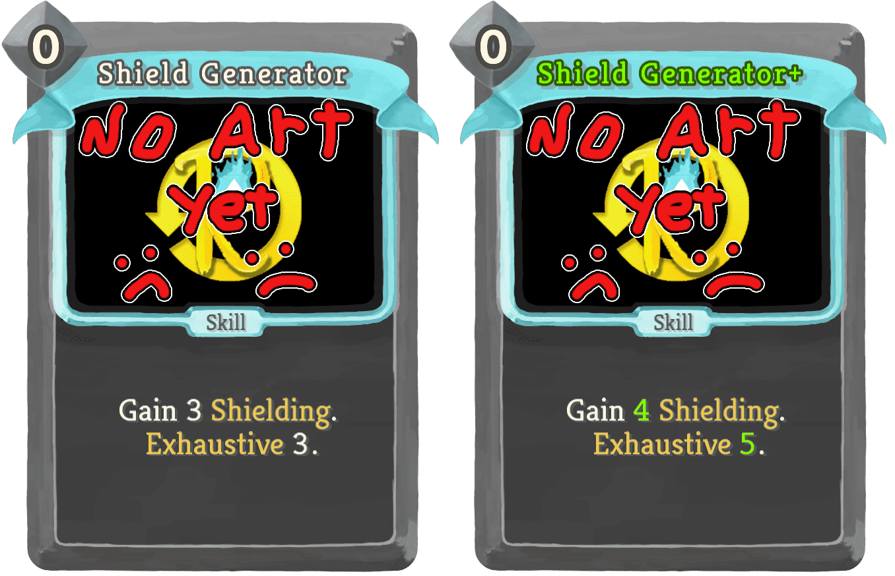 | Uncommon | Skill | 0 | Gain 3 (4) Shielding. Exhaustive 3 (5). |
| Specialist |  | Uncommon | Power | 0 | Lose 1 Focus. (Innate.)All non-attack damage you deal is increased by 2. |
| Sssshield | 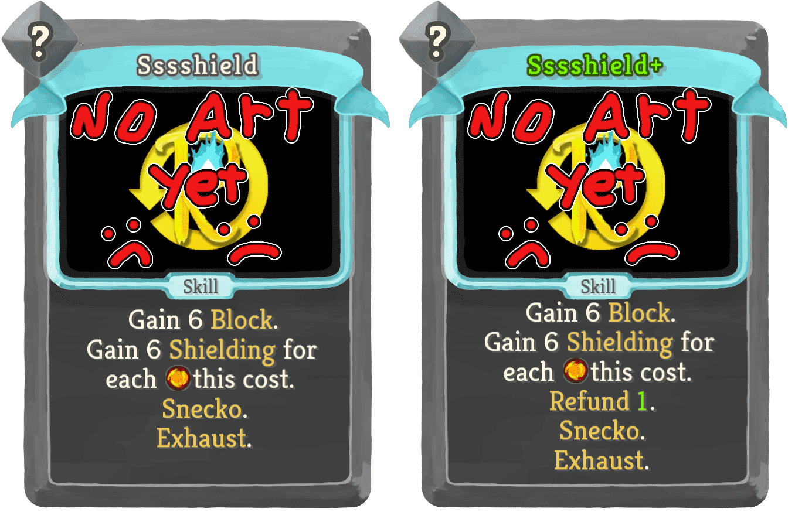 | Uncommon | Skill | X | Gain 6 Block. Gain 6 Shielding for each [E] this cost. (Refund !stslib:refund!.)Snecko. Exhaust. |
| Sssstrike | 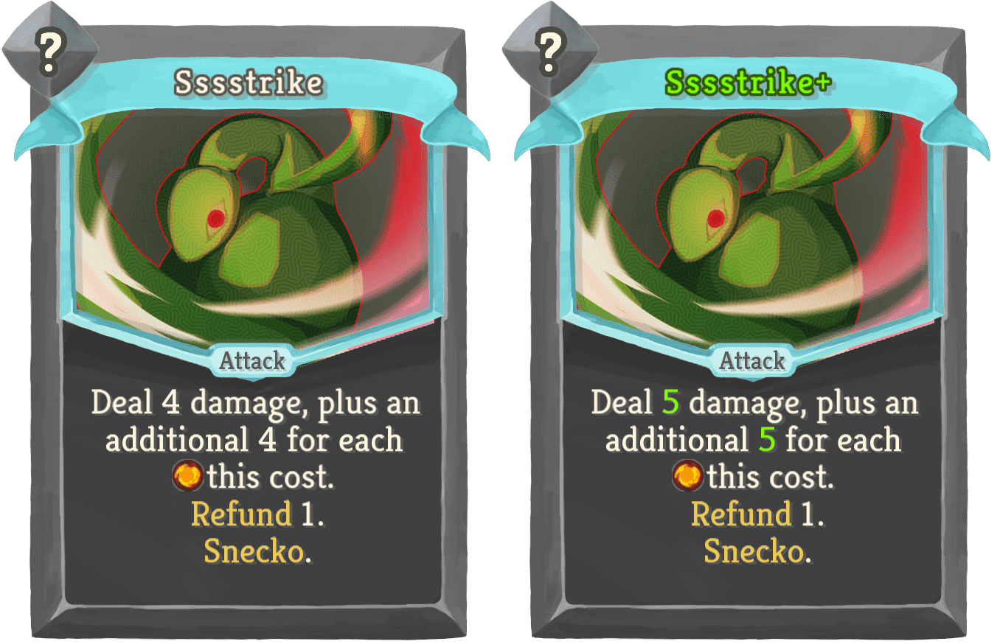 | Uncommon | Attack | X | Deal 4 (5) damage, plus an additional 4 (5) for each [E] this cost. Refund 1. Snecko. |
| Survey Options | 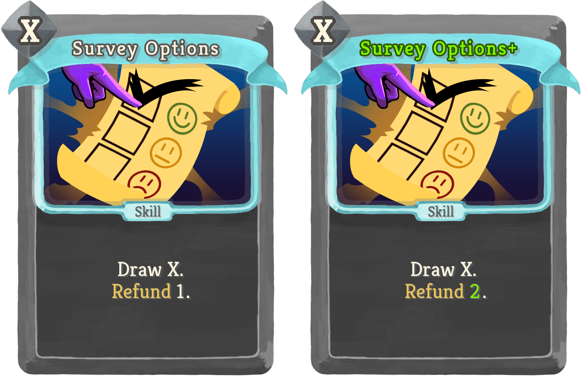 | Uncommon | Skill | X | Draw X. Refund 1 (2). |
| Trickstab | 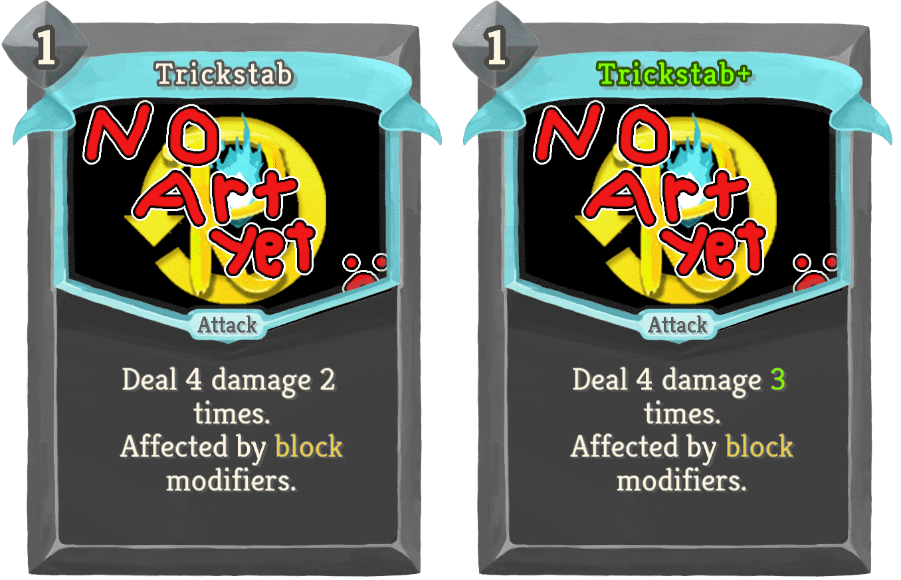 | Uncommon | Attack | 1 | Deal 4 damage 2 (3) times. Affected by block modifiers. |
| Uncanny Aura | 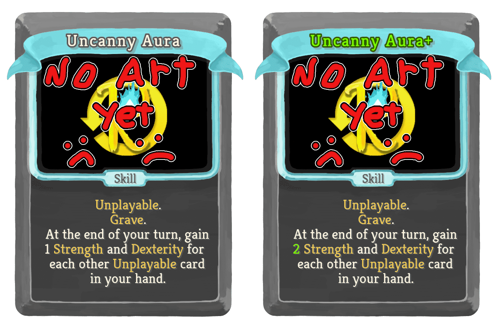 | Uncommon | Skill | | Unplayable. Grave. At the end of your turn, gain 1 (2) Strength and Dexterity for each other Unplayable card in your hand. |
| Awakened One Ritual |  | Rare | Power | 0 | Add 3 (4) πRitual Components to your draw and discard piles. If 5 are ever in your hand at once, they become 42 damage Attacks. |
| Brewmaster |  | Rare | Power | 3 (2) | Obtain a random potion at the start of each round. |
| Midas Touch |  | Rare | Skill | 0 | Exhaust any number of cards in your hand. Add a random (Upgraded) Rare card to your hand for each. Exhaust. |
| Necrogeddon |  | Rare | Attack | 0 | Deal damage equal to the number of cards you've Exhausted this combat (to ALL enemies). Grave. |
| Poisoned Strike |  | Rare | Attack | 0 | Apply 3 (4) Poison. Affected by damage modifiers. |
| The Ultimate Defense |  | Rare | Power | 4 | Gain 1 (2) Artifact. Gain 1 (2) Dexterity. Gain (1 Intangible. Gain) 5 Plated Armor. Gain 5 (8) Shielding. |
| Abe's Revenge | 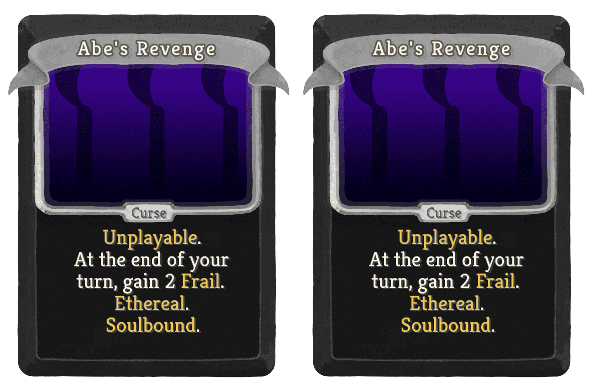 | Special | Curse | | Unplayable. At the end of your turn, gain 2 Frail. Ethereal. Soulbound. |
| Amnesia | 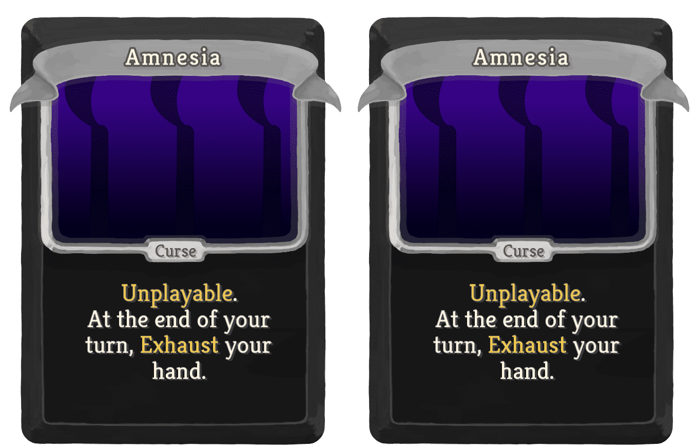 | Curse | Curse | | Unplayable. At the end of your turn, Exhaust your hand. |
| Common Cold |  | Curse | Curse | 0 | Sneeze! |
| Delirium | 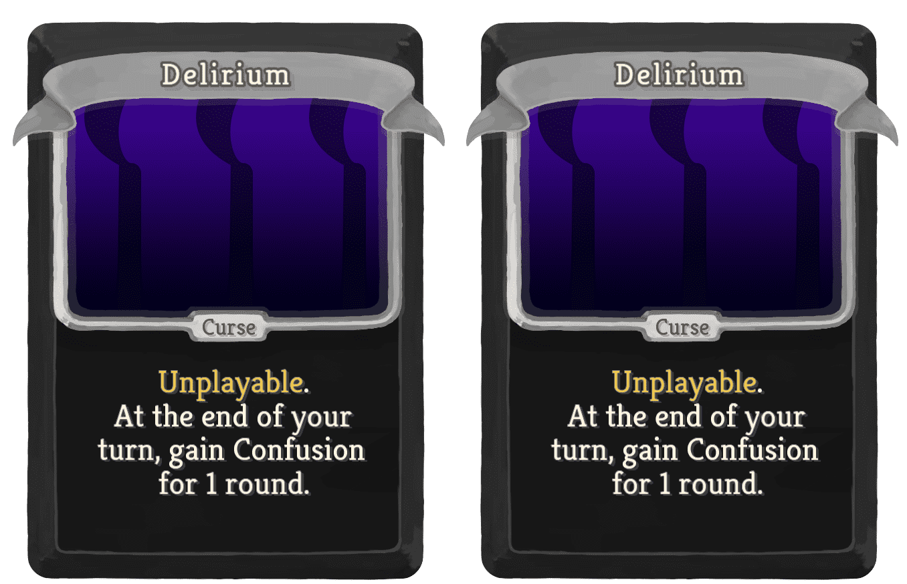 | Curse | Curse | | Unplayable. At the end of your turn, gain Confusion for 1 round. |
| Depression |  | Curse | Curse | | Unplayable. When drawn, gain 2 Languid and draw a card. |
| Doomed |  | Curse | Curse | 0 | Die. Fleeting. Ethereal. Grave. |
| Faulty Equipment | 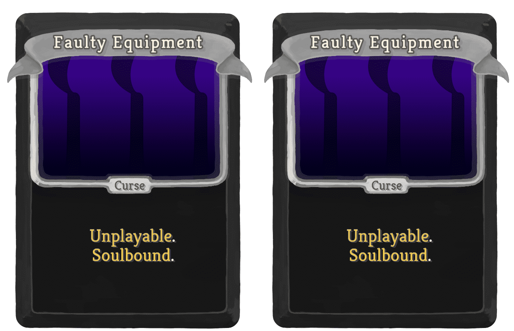 | Curse | Curse | (0) | Unplayable (Fleeting). Soulbound. (not Soulbound.) |
| Hallucinations | 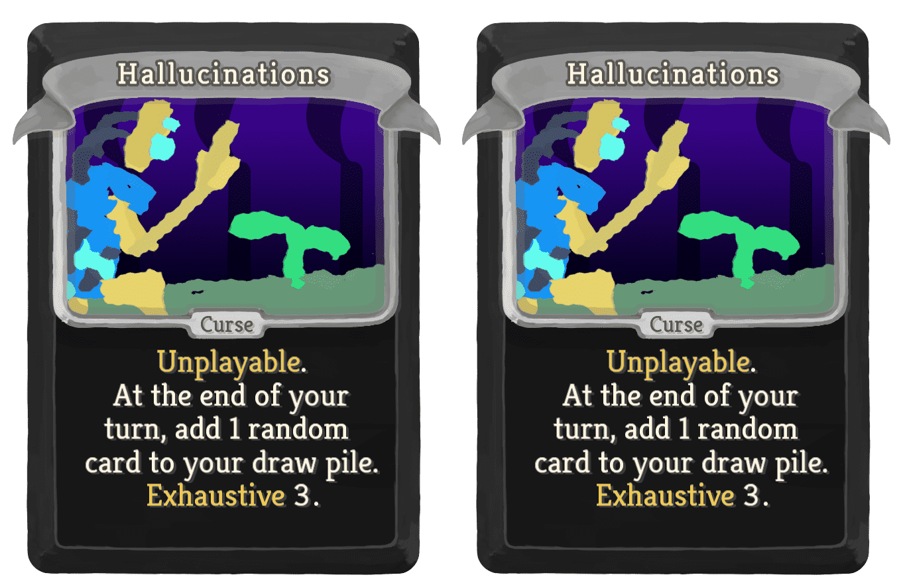 | Curse | Curse | | Unplayable. At the end of your turn, add 1 random card to your draw pile. Exhaustive 3. |
| Hysterical Blindness | 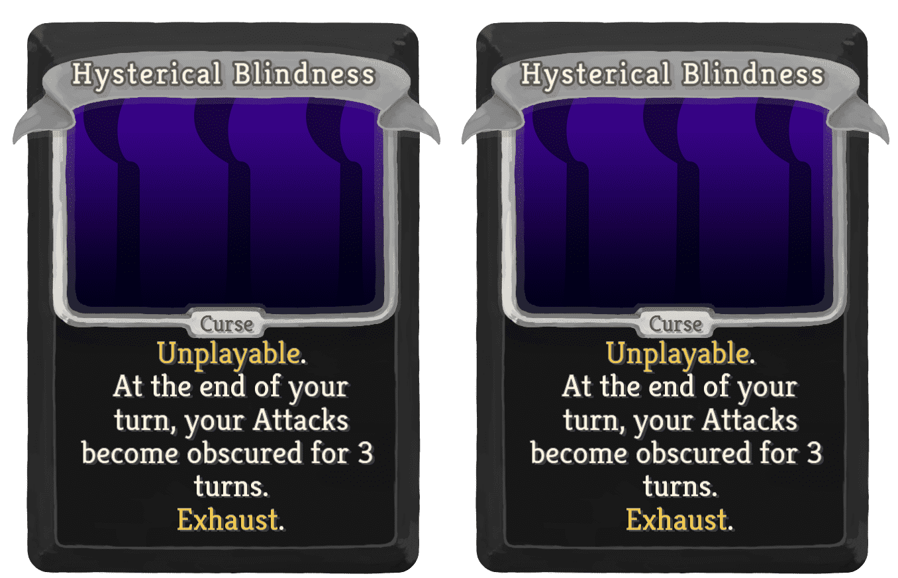 | Curse | Curse | | Unplayable. At the end of your turn, your Attacks become obscured for 3 turns. Exhaust. |
| I.O.U. |  | Curse | Curse | | Costs 100 gold to play. Fleeting. Soulbound. |
| Looming Evil |  | Curse | Curse | 3 | Can be played for 3 Energy to Exhaust. At the end of your turn, shuffle a curse into your draw pile and reduce cost. |
| Over-Encumbered | 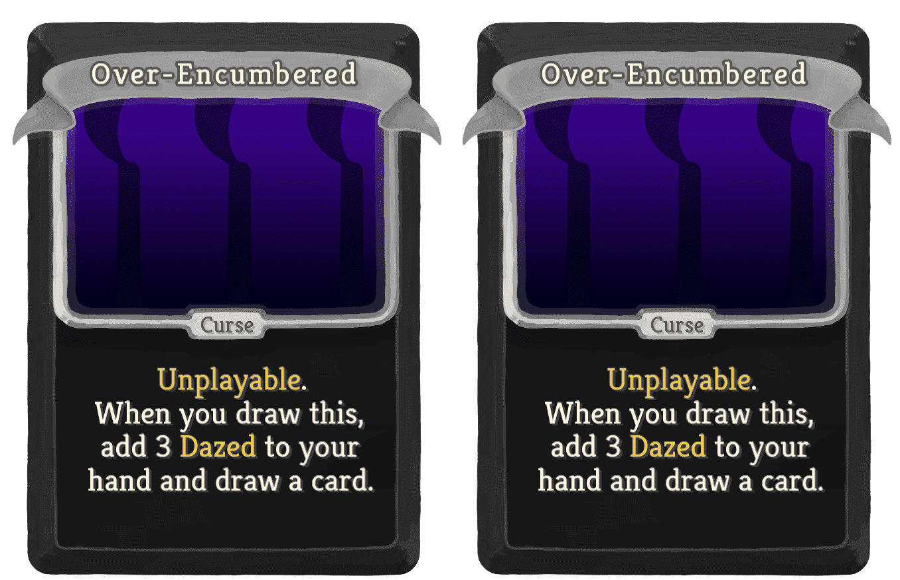 | Curse | Curse | | Unplayable. When you draw this, add 3 Dazed to your hand and draw a card. |
| Restless Dread |  | Curse | Curse | 0 | Autoplay. Draw 1 card. Add 3 random Curses to your discard pile. Exhaust. Grave. |
| Sickly | 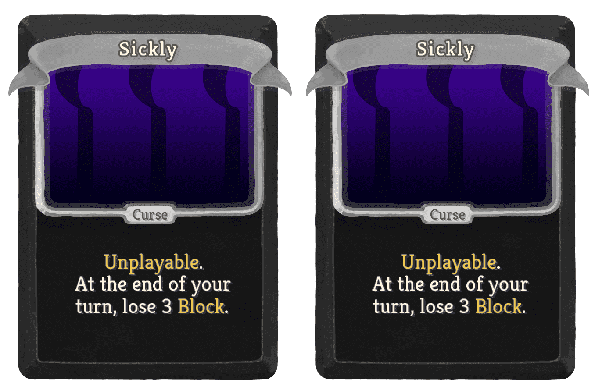 | Curse | Curse | | Unplayable. At the end of your turn, lose 3 Block. |
| Splinters | | Curse | Curse | 0 | Take 2 damage. Draw 1 card. Exhaustive 2. Startup: add a copy of this to your draw pile. |
| Spreading Infection | | Curse | Curse | | Unplayable. At the end of your turn, duplicate all other Status and Curse cards in your hand. |
| Voices | | Curse | Curse | | Unplayable. Ethereal. Startup: Add 2 copies of this card to your discard pile. |
| Name | Image | Tier | Pool | Description | Flavor |
|---|
| Book of the Snake |  | Starter | Mystic_purple | Shuffle 2 random Cantrips into your draw pile at the start of combat. Certain Green cards can now be obtained. | It's written in a strange language. When read out loud, only hissing can be heard. |
| Iron Core |  | Starter | | At the start of combat, gain 2 orb slots if you have none, or Channel1Hellfire otherwise. Certain Red and Blue cards can appear in future card reward screens. | Powered by unceasing flames and rage. |
| Sizzling Blood |  | Starter | | At the end of combat heal 4 HP. Gain 4 max HP on pickup. | It burns with fire and poison. |
| Smoldering Blood | | Starter | | Right click during combat to activate. Usable once per combat. Enter Calm. Certain Red cards can appear in future card reward screens. Certain Purple cards can appear in future card reward screens. | The fire has calmed. |
| Staff of the Snake |  | Starter | | At the start of each combat, add an Insight to your hand. Certain Green cards can appear in future card reward screens. Certain Purple cards can appear in future card reward screens. | ssssssssssssssssssssssstaff |
| Antivirus Software |  | Common | Blue | Every time you shuffle your deck, gain 1Artifact. When you draw a Status, consumes 1Artifact to Exhaust it and all other Status cards drawn that turn, drawing 1 card each time. | The robotic equivalent to a vaccine. |
| Bandana | | Common | | Gain 2Thievery for the first 3 turns of combat. Synergy - BloodyIdol. | The finest article of pick-pocketing attire. |
| Baseball |  | Common | | Upon pick up, a random card in your deck becomes free. | We all have our favorite player. |
| Funnel |  | Common | | At the end of your turn, unused energy is converted to 4Block each. | Use every last drop. |
| Geode | | Common | Blue | The first time you lose HP each combat, trigger the passive effect of all your channeled orbs and Channel1Crystal. | Break it open! |
| Gremlin Food | | Common | | Whenever you Rest, Upgrade a random card. | Some gremlins are known to steal food from people, but in return grant a favor while the adventurer sleeps. |
| Grinning Jar |  | Common | | Obtain a Skill that draws 2 cards. Obtain an additional copy for every 12 other cards added to your deck. | "I play Grinning Jar, which allows me to draw 2 cards from my deck!" |
| King of Hearts | | Common | Red | When you lose HP during your turn, gain twice that much block. | Traditionally drawn with his sword going through his head, is sometimes known as the Suicide King. |
| Lightbulb |  | Common | | If you have any unspent [E] at the end of your turn, draw that many cards at the start of your next turn. | How long has it been since you've seen the sun? |
| Mystery Machine | | Common | | Gains 1 charge each time you enter a ? room. Loses 1 charge each time you go between two non-? rooms. Start combat with 1 random Strength or Dexterity for each charge this has. | For those who like to wander. |
| Pet Ghost | | Common | | Add a ghost card to your hand every turn. Your max hand size is increased by 1. | The ghost of a pet once belonging to a knight. |
| Rubber Ducky | | Common | | Each time you play a Power, gain Shielding equal to 3 times its [E] cost. | When you squeeze it, it makes noise. |
| Rune of Simplicity |  | Common | | Strikes and Defends can be Upgraded any number of times. On pick up, Upgrade2 randomly. | Sometimes, things aren't as complicated as they appear. |
| Spearhead |  | Common | Red | At the end of your turn, all enemies lose HP equal to their Vulnerable. | --- |
| Tag Bag |  | Common | | Shops have all 3 kinds of sale tags. Sale tags can appear on colorless cards. On-sale cards are cheaper. | A colorful collection. |
| Tiger Marble |  | Common | | At the start of each combat, add a random card which Exhausts to your hand. It costs 0 until played. | Eye of the Tiger |
| Wax Seal |  | Common | | Relics in shops cost 20% less. Right click at a shop to activate: Borrow 100 gold. Add a Curse to your deck until you pay it back. Usable up to 3 times per shop. | The kind used to close envelopes, not the sea creature. |
| Accelerometer | | Uncommon | | Right click during combat to activate. Usable once per combat. Decrease your turn-based Debuffs by 1. Increase all enemy turn-based Debuffs by 1. | Time over Time. |
| Bottled Eggs | | Uncommon | | On pick up, choose a card. All copies of that card you have are Upgraded. All future copies of that card you obtain are Upgraded. | |
| Bottled Flurry | | Uncommon | | On pick up, choose a card. You Retain that card at the end of your turn. If the card would Exhaust due to being Ethereal, it is discarded instead. | It's like a snowglobe! |
| Bottled Geyser | | Uncommon | | On pick up, choose a card. Each time you shuffle your deck, that card is placed on the top. | FWOOOOOOSH! |
| Bottled Snecko |  | Uncommon | | On pick up, you may choose a card. It gains Snecko. If you do not choose a card, you may choose one at a later restsite as a freeaction. | Despite how large the adults are, baby sneckos are small enough to fit in your pocket - and they're cute! |
| Carrot |  | Uncommon | Blue | You gain 3Focus at the start of combat. You lose 1Focus over the next 3 turns. | Filled with power. |
| Chameleon Ring | | Uncommon | | Your potions are more potent. You can now Brew at Rest Sites. | A ring that glimmers with slowly shifting colors. |
| Divine Protection | | Uncommon | | Gain 8TemporaryHP at the start of combat. | The strength to carry on in times of trial. |
| Garlic |  | Uncommon | | At the start of combat, apply 3Languid to ALL enemies. | Taking a whiff may cause your eyes to tear up. |
| Golden Egg |  | Uncommon | | Whenever you add a Rare card to your deck, it is Upgraded. Whenever you purchase a card from the merchant, it is Upgraded. | Not approved by the FDA. |
| Hand Mirror |  | Uncommon | | Whenever you gain Vulnerable or Weakened, it is also applied to the enemy that sent it. | You can see yourself through the glass. The good and the bad. |
| Iron Hammer |  | Uncommon | | During the first turn, drawing a card upgrades it. | A handy - and heavy - tool. |
| Ninjato |  | Uncommon | | Every time you play 3Attacks in a single turn, draw 2 cards. | Stab stab stab |
| Onion Ring |  | Uncommon | | You gain 3 Strength at the start of each combat. You lose 1 Strength over the next 3 turns. | The onion is encased in a deep-fried breading. |
| Quantum Egg |  | Uncommon | | Whenever a card is created during combat, it is Upgraded. | Tastes like [REDACTED]. |
| Ringing Soul |  | Uncommon | | Once per room, when you add a card to your deck, gain 3 Max HP. | How obnoxious! |
| Shallot |  | Uncommon | | You gain 3 Dexterity and Metallicize at the start of each combat. You lose 1 Dexterity and Metallicize over the next 3 turns. | It's a shallot. Not a whole lot to say about it. |
| Snack Pack | | Uncommon | | Every time you play 3 Attacks in a single turn, gain 2 HP. | Always come prepared with a snack. |
| Solar Panel |  | Uncommon | Blue | At the end of combat, heal 2 HP for each of your active Lightning orbs. | Clean, renewable power. |
| Wasp Nest | | Uncommon | | Each time you lose HP in combat, gain 2Thorns. | Like a bee nest, but more evil. |
| Another Sword |  | Rare | Red | The first card containing "strike" you play each round is played twice. Takes 1 additional turn to recharge for each [R] spent on the card. | A second sword. You have two now. |
| Arrowhead |  | Rare | | You may Upgrade 2 cards whenever you smith. | The first thing you ever forged. |
| Basket of Snakes | | Rare | Green | Every time you play 3Attacks in a single turn, gain 1 stack of SnakeVenom. Whenever you deal unblocked Attack damage, apply NecroticPoison equal to your SnakeVenom.SnakeVenom decreases by 1 each turn. | Don't worry; they won't bite. At least, they won't bite you. |
| Byrd Skull | | Rare | Green | Your Innate cards have Refund1 and draw 1 card. | The skull of a fallen Byrd. ...Get it? Fallen? |
| Counterbalance |  | Rare | | During boss and elite fights enemy Strength gain, Block gain, and Healing is reduced by half. | For every strength, there is a weakness. |
| Durian | | Rare | | Whenever you gain a Debuff, gain TemporaryHP equal to the amount. At the start of your turn, reduce your turn-based Debuffs to 2. On pickup, increase your max HP by 5. | Smells awful, tastes great. |
| Kaleidoscope | | Rare | | When you play 3 cards that give Block in a single turn, gain 1Reflection. | Colors, distorts, and reflects light. |
| Multitool |  | Rare | | You have 2 additional options at rest sites, chosen randomly. | |
| Pocket Polymer |  | Rare | | You can now Transform a card at rest sites as a freeaction. | The power of SCIENCE! Probably. |
| Pondfish Scales | | Rare | | Whenever you play a Skill that does not give Block, gain 2Block. | Scales sometimes held by those who have bested Captain Abe in battle. |
| Purple Gloves | | Rare | Purple | Your max hand size is increased by 2. When you exit Calm, draw 1 card. When you enter Divinity, draw 2 cards | Hands are always improved by fancy gloves! |
| Towering Pillar of Hats |  | Rare | | Max hand size increased by 2. At the end of your turn, Retain the right-most cards in your hand. Retains1 card for every 3 in your hand. | "Tarnish notte the majesty of my TOWER of HATS!" |
| Vampiric Spirits | | Rare | Green | On the first turn of combat, 25% of all unblocked Attack damage you deal is returned as health. | A fondness for shadows, a thirst for blood; traits held by rogues and vampires alike. |
| Library Looter |  | Special | | CustomRunModifer Each time you open a non-boss chest, choose 1 of 15 cards to obtain. | aight listen i KNOW its bad form to implement a custom run mod with a relic but y'know what sometimes you just gotta look urself in the mirror and ask "do i really feel like dealing with patching shit when relics have a perfectly good hook for opening chests" and sometimes the answer is no. |
| Ring of Addiction | | Special | | On pick up, obtain 3 potions and 2 random relics with effects related to potions. Each time you go through 3 rooms without using a potion, lose 2 Max HP. | Good in abundance breeds evil. |
| Ring of Challenge | | Special | | Right click during the first turn of combat to activate. Usable up to 3 times per combat. Apply random buffs to all enemies. Gain ~15 gold. Every 10 times you use this relic, you will obtain an random relic at the end of the fight. | There is a fine line between bravery and stupidity. |
| Ring of Collecting | | Special | | Non-boss chests contain a random ring relic in addition to thier normal contents. Shops will sometimes sell ring relics. | A full set is greater than the sum of its parts, yet not nessearily worth the cost. |
| Ring of Exchange | | Special | | Shop relics can sometimes appear in boss chests. Boss relics can sometimes appear in shops. | You never know the value of what you have until it is lost. |
| Ring of Fangs |  | Special | | At the start of combat lose 3Strength. Whenever you deal unblocked attack damage, apply 1Poison. | The fangs poke into the wearer, making wielding weapons difficult. |
| Ring of Fury | | Special | | At the start of combat gain 2Strength and lose 1Dexterity. | A cursed ring that heightens both senses and senselessness. |
| Ring of Greed |  | Special | | On pick up, obtain 50 gold and 2 random relics with effects related to gold or shops. For every 150 gold you obtain, add 1 random Curse to your deck. | Great wealth often rides with great dispair. |
| Ring of Hypnosis | | Special | | All enemies start with 5Confusion. | The strange colors and reflected lights draw the mind down a wandering path. |
| Ring of Misfortune |  | Special | | At the start of combat add a random Curse to your discard pile. Each time you draw a Curse, gain [E] and 3TemporaryHP. Each time you draw a Status, gain 3Block. | Weary wear. |
| Ring of Panic | | Special | | At the start of combat you become Confused for 3 turns. Gain [E] [E] at the start of rounds 1 and 2. Gain [E] at the start of round 3. | Fear serves its purpose. |
| Ring of Peace |  | Special | | At the start of combat apply 3Weak to ALL fighters and gain 1Buffer | Peace never lasts long in the Spire. |
| Ring of Searing | | Special | | At the start of your turn, ALL enemies above 50% Max HP lose 10% of their current HP. At the end of each round, if you are above 75% Max HP, lose 5 HP. | A cursed ring that burns everything around it to ash. |
| Ring of Shattering |  | Special | | At the start of combat you gain 3Focus and lose 2 Orb Slots. | What is broken can be made better for it. |
| Abe's Treasure | | Boss | | Gain [E] at the start of your turn. Start combat with Drowning. On pick up, add a copy of Abe'sRevenge to your deck. | Cursed? |
| Ancient Bell |  | Boss | | On pickup, choose 3Relics and 3Curses to obtain. All choices are out of 3 options and cannot be skipped. | A relic long forgotten. |
| Bronze Core |  | Boss | | Gain [E] at the start of your turn. Each combat includes a Bronze Orb minion that won't attack, but will put cards into stasis until killed. | Even now, it acts to defend the spire. |
| Chewing Gum |  | Boss | | Gain [E] at the start of each turn. Every time you shuffle your deck, add 3Slimed to your draw pile. | Sticky and sweet. |
| Dimensional Glitch |  | Boss | | Gain [E] at the start of each turn. All non-attackdamage you deal is reduced to half, rounding down. All non-attackdamage you recieve is increased by half, rounding up. All in-combathealing you recieve is reduced to half, rounding up. | UPDATE BODY TEXT |
| Electric Blood | | Boss | Red | Gain [R] [R] at the start of each turn. Lose 1 HP for every [R] you use, excluding the first 2 used each turn. | You feel your body surging with power. It hurts. |
| Grab Bag |  | Boss | | Lose [E] at the start of each turn. On pick up, choose 2Energy Boss Relics and 1Non-Energy Boss Relic to obtain. All choices will be out of 3 random relics, and cannot be skipped. | Trinkets and treats. What will you get? |
| Hamster Wheel | | Boss | | Gain [E] each time you draw a card. Drawing a card increases its cost by 1 for the turn. At the start of combat, add a random Curse to your draw pile for each X-cost card in your deck. | Keep on running. |
| Honey Jar |  | Boss | | Draw 1 more card each turn. Retain up to 1 card each turn. Extra choice on card reward screens. On pick up, gain 1 extra potion slot. You cannot skip rewards. | Delicious! |
| Kintsugi | | Boss | | Remove 5 cards from your deck. Choose 2Curses to obtain. (Attempting to remove Curses with the first effect Transforms them instead). | What is broken can be made better. |
| Ooze Armor |  | Boss | Red | Gain [E] at the start of each turn. Gain 4Malleable and -3Slow at the start of combat | Armor with the flexibility and toughness of living slime. |
| Ring of Chaos | | Boss | | Some card rewards have randomly altered stats and effects. | A ring with wild and unpredictable magic effects. |
| Shrinking Draught |  | Boss | | Lose [E] and draw 2 cards at the start of your turn. Start each combat with 4Dexterity. If you play at least 6 cards in a single turn, gain [E] at the start of your next turn. On pick up, remove 3 cards from your deck and lose 25% Max HP. Synergy - TinyHouse | The label reads "Drink me." |
| Snecko Heart | | Boss | | Start combat Confused.Confusion can never increase the cost of a card by more than 1. The first card you draw each turn always costs 0. | The preserved heart of a fallen Snecko. |
| Snecko Scales | | Boss | Green | Draw 3 additional cards each turn. When you play a card that costs more than 0 energy, discard a card. | Scales from a Snecko that shed its skin. They seem to reflect lights with shimmering colors. |
| Sweet Flower |  | Boss | | Gain [E] at the start of each turn. Less map information. | The sickly sweet scent of this flower makes you feel dizzy... |
| Wanted Poster | | Boss | | Gain [E] at the start of each turn. For every 100 gold below 500 you have, enemies start with a random buff. Gain 100 gold on pick up. | Gold and blood: weighed on the same scale. |
| Bargain Bundle |  | Shop | | When you purchase this relic, the cost of the cards, potions, and card removal service in the same shop are reduced by 100 gold. | What a deal! |
| Cursed Coin | | Shop | | On pickup, obtain 150 gold and a random Curse. | A cursed coin that brings misfortune to its owner. The only way to get rid of it is to sell it. |
| Energy Ball |  | Shop | | Right click during combat to activate. Usable once per combat. Consumes unspent [E] at the end of your turn to gain charges, up to 5 max. Using spends 3 charges to play your character's Form Power. | Smashing! |
| Frozen Program | | Shop | Blue | Each time you EvokeFrost, gain 1Reflection. | FROST.exe has stopped responding. |
| Guide Book | | Shop | | On pickup, Upgrades 2 cards randomly. Prioritizes rarer cards. | A book detailing "tourist spots" in the spire. It seems to have been written by the shop merchant. |
| Raider's Mask | | Shop | Blue | At the end of your turn, if a Dark orb has more stored damage than the HP of the lowest-health enemy, it is Evoked. | Leave no survivors. |
| Shop Pack |  | Shop | | Choose 3Colorless cards to obtain. Guaranteed to get at least 1 Rare card! | A cheap 3-card booster pack. Probably rigged by the merchant. |
{kind=link}
{kind=link}
{kind=link}
{kind=link}
{kind=link}
{kind=link}
{kind=link}
{kind=link}
{kind=link}
{kind=link}
{kind=link}
{kind=link}
{kind=link}
{kind=link}
{kind=link}
{kind=link}
{kind=link}
{kind=link}
{kind=link}
{kind=link}
{kind=link}
{kind=link}
{kind=link}
{kind=link}
{kind=link}
{kind=link}
{kind=link}
{kind=link}
{kind=link}
{kind=link}
{kind=link}
{kind=link}
{kind=link}
{kind=link}
{kind=link}
{kind=link}
{kind=link}
{kind=link}
{kind=link}
{kind=link}
{kind=link}
{kind=link}
{kind=link}
{kind=link}
{kind=link}
{kind=link}
{kind=link}
{kind=link}
{kind=link}


{kind=link}
{kind=link}
{kind=link}
{kind=link}